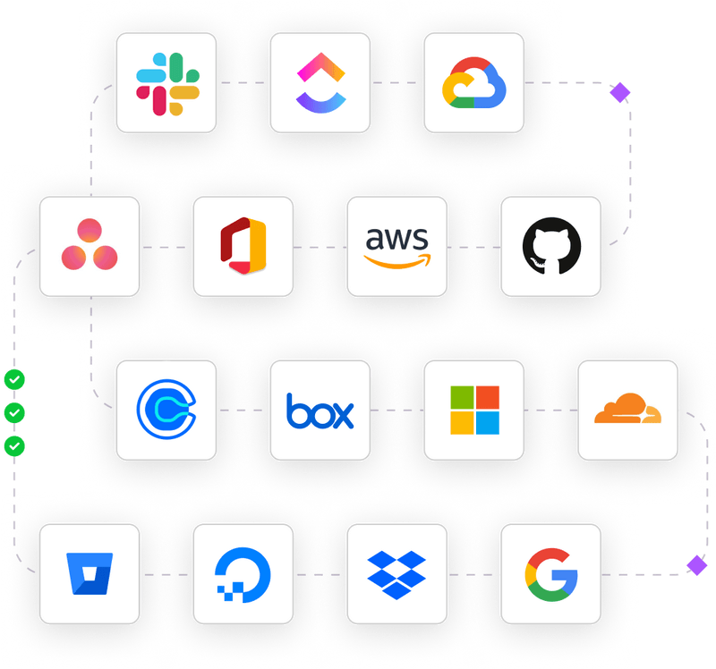

In today’s digital landscape, ensuring robust information security is crucial for businesses of all sizes. With increasing regulatory requirements and the growing threat of cyberattacks, maintaining compliance has become both a critical necessity and a complex challenge. To navigate this complexity, organizations are turning to platforms like Vanta to streamline compliance processes, reduce risks, and maintain continuous security oversight. By automating key tasks and offering real-time monitoring, Vanta helps businesses stay ahead of evolving security standards while focusing on their core operations.
Businesses today face a myriad of security challenges, from managing user access to protecting sensitive data. Staying compliant with security regulations requires ongoing vigilance, frequent updates, and thorough documentation. However, managing this manually can be both time-consuming and error-prone, especially for growing businesses with limited resources. Vanta addresses these challenges by automating critical aspects of compliance, offering a structured, efficient approach to security management.
Vanta provides companies with a customizable framework, ensuring that compliance efforts are tailored to their specific security needs. This flexibility allows organizations to focus on areas that matter most, avoiding a one-size-fits-all approach that may overlook key risks or vulnerabilities.
At the heart of Vanta’s platform is its ability to automate and integrate seamlessly with essential business tools. Whether it's identity management systems like Okta or cloud services, Vanta automates the data collection and monitoring required to keep security controls in place. This automation not only saves time but also ensures consistency in applying security measures across an organization’s digital environment.
The ability to integrate existing systems into Vanta makes it easier for companies to streamline user access management, ensuring that the right security policies are enforced without manual intervention. With real-time insights into user activity and automated controls, businesses can quickly identify and mitigate potential security risks before they escalate.
Security policies form the foundation of any strong compliance program, and Vanta enables businesses to create, implement, and manage these policies with ease. The platform simplifies the creation of policies by providing templates and tools to ensure that security measures are aligned with regulatory requirements. These policies can then be monitored and updated within Vanta, ensuring they remain effective as the business evolves and security risks change.
Real-time monitoring is another key feature that ensures continuous compliance. Vanta automatically tracks the organization’s security posture, detecting potential issues and alerting teams to any areas that need attention. This ongoing oversight is essential for maintaining a high level of security, as it ensures that compliance is not just a one-time event but a continuous process.
Audit preparation can be one of the most stressful aspects of maintaining compliance. Gathering documents, ensuring that policies are up to date, and coordinating with auditors can strain resources and disrupt operations. Vanta alleviates this burden by organizing all necessary compliance documentation in one place and keeping it up to date through continuous monitoring.
With Vanta’s audit management tools, businesses can easily prepare for external reviews, making sure that all required evidence is readily accessible. The platform also facilitates smoother interactions with auditors, helping to ensure that the process is as efficient and stress-free as possible. By reducing the time and effort needed to prepare for audits, Vanta enables companies to focus on maintaining their security measures without disruption.
Achieving compliance is just the beginning; maintaining it over time is equally important. Vanta supports organizations in managing ongoing compliance by continuously monitoring their security environment and offering alerts when any policies or procedures need updating. This proactive approach helps businesses remain compliant even as regulations evolve or as new security risks emerge.
Vanta’s adaptability is key to its effectiveness in managing compliance. As business operations expand or security needs change, the platform allows for easy updates and modifications to policies. This ensures that the organization’s security framework remains aligned with both regulatory demands and operational requirements.
Risk management is a core element of any compliance strategy, and Vanta’s platform is designed to support organizations in identifying, assessing, and mitigating risks. By automating the identification of security vulnerabilities and providing actionable insights, Vanta enables businesses to address risks before they become critical issues.
The platform’s real-time monitoring capabilities also extend to third-party vendors and other external partnerships, ensuring that potential vulnerabilities from outside the organization are also accounted for. Vanta helps businesses automate security training for employees, ensuring that everyone within the organization is aware of their role in maintaining compliance and security.
Creating a sustainable compliance strategy requires more than just meeting today’s security standards. Organizations must anticipate future risks and be prepared to adapt to new regulatory requirements as they emerge. Vanta helps businesses build a clear roadmap for the future by offering tools that identify areas for growth and improvement, develop action plans, and set clear milestones for achieving compliance goals.
Technology is a critical enabler in this process, and Vanta leverages advanced automation and monitoring tools to help organizations stay ahead of security threats. By continuously evaluating the company’s security posture, Vanta ensures that businesses remain agile and prepared for changes in the regulatory landscape or the emergence of new security risks.
In a world where information security and regulatory compliance are increasingly complex, businesses need effective tools to manage these challenges. Vanta offers a comprehensive solution that automates key compliance tasks, provides real-time monitoring, and ensures continuous adherence to security standards. By simplifying the compliance process and reducing the risks associated with manual management, Vanta empowers businesses to focus on their growth while maintaining the highest levels of security.
With its ability to customize, automate, and monitor compliance efforts, Vanta is an essential tool for businesses looking to streamline their security management processes and remain adaptable in an ever-changing regulatory environment.